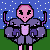

This is the Visual Design Page
Pixel Character

Artist Statement
For this assignment, I used the tools to fill in the colors and the symmetrical tool, that helped with making it even. I started by being confused on what to make and eventually just started making random designs for the background. My character’s color scheme was inspired by Kirby. My character is wearing a purple donut. My character would be in a game that allows you to fight aliens. Their role would be to take over the city.
Pop Art Celeberity

Artist Statement
For This project I used zendaya. She's one of my favorite actresses . I felt like she was perfect for this project. I changed her to be in every color possible.
Pop Art Celeberity
Artist Statement
For This project I used zendaya. She's one of my favorite actresses . I felt like she was perfect for this project. I changed her to be in every color possible.